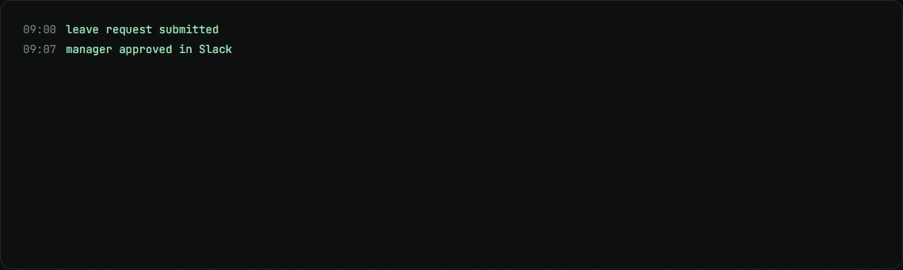
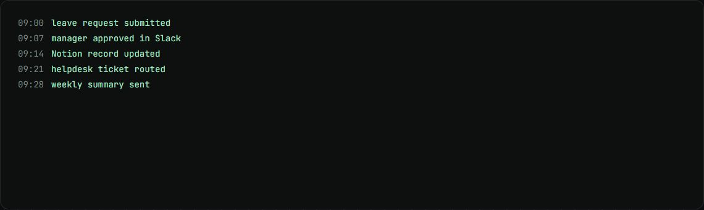

HR and ops automation
Slack and Notion automations for a client's leave, probation, helpdesk and approval requests.
my role Engineer on the engagement: scoping, design and build.
The problem
A client's HR and ops requests, from leave to deal approvals, ran through scattered messages and manual tracking.
How it works
- People make requests through one Slack app: forms, approve buttons and a home tab.
- n8n, hosted in the client's own cloud, runs the logic.
- Records live in Notion, and Claude is used only for a few language steps.
- A full AI agent setup was considered and turned down in favour of plain, testable workflows.
What changed
- 15automations scoped
- 77tracked decisions, tasks and questions
What I built
- Scoped 15 candidate automations and chose 10 to build.
- The architecture and the tracker for the engagement.
Stack
- Slack
- n8n
- Notion
- Claude API
- HubSpot
- Microsoft Graph
Stills

